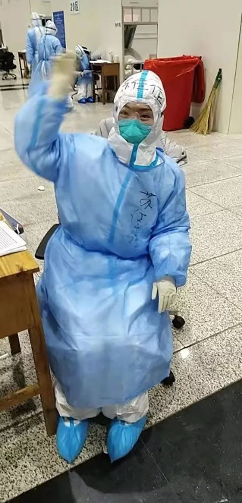

决胜武汉进行时
原文链接 备份链接 *************▲*************2月18日，青山区工人村街道青和居社区第三网格网格员在挨家排查。 （新华社/图） 全文共8426字，阅读大约需要16分钟。 新建或改造医院的速度，远比不上确诊病 …
澎湃新闻记者 杨喆 实习生 姬尊雨
在武汉抗击新型冠状病毒肺炎疫情的前线，活跃着很多年轻人的身影，来自贵州省支援湖北医疗队的95后护士苏佳佳就是其中之一。作为遵义市绥阳县人民医院急诊科的护士，在疫情爆发后，她主动请缨驰援湖北，前往抗击疫情的第一线。
相守：推迟婚礼，驰援武汉
苏佳佳的爱人王昆昆是绥阳县公安局交警大队事故处理中队的一名交通辅警，两人在去年领取了结婚证，并定于今年2月1日举行婚礼，但突如其来的新冠肺炎疫情打乱了他们的计划。
眼看着疫情形势日益严峻，考虑到工作上的安排。两人决定推迟婚礼，并退掉了赴三亚蜜月旅行的机票。

绥阳县人民医院为苏佳佳举行出征仪式 本文图片均由受访者提供
2月4日凌晨，苏佳佳接到了医院打来的电话，询问她是否愿意支援湖北前线，她毫不犹豫地答应了下来。当晚苏佳佳迅速收拾好行装，准备奔赴一线。4日中午，苏佳佳踏上了前往武汉的征程，医院的同事为她送行，当然，更少不了王昆昆“爱的支持”。“在前方要按时吃饭，一定要照顾好自己。平安归来。”在送苏佳佳去机场的过程中，王昆昆反复叮嘱。
经过一天的调整和岗前培训，2月6日，苏佳佳正式开始了在江汉方舱医院的护理工作。她告诉澎湃新闻，方舱医院的医务人员实行“轮班制”、“四班倒”，自己上的是晚8点到凌晨2点的班。每天晚上7点左右，所有晚班医务人员就要在酒店集结，乘班车前往方舱医院。
“在方舱医院，我们医护工作者需要穿着纸尿裤上班。进入医院后一个班是6小时，加上穿脱隔离衣的时间就需要大概7个小时。7小时不能吃饭不能喝水不能上厕所挺难受的，而且由于隔离衣的限制，活动也不是很方便。”苏佳佳坦言。

方舱医院里的苏佳佳
苏佳佳告诉记者，她负责管理一个20人规模的病区，其中有一位患者令她尤其操心，那是一位大约50岁的男性病人，发烧到40℃,退烧药也吃了好几次，却都没有什么效果。为了让他减少痛苦，苏佳佳想到了物理降温的办法，在方舱医院的医疗资源紧缺的情况下，她来回五六次排队，用脸盆一遍遍接满热水，再给病人敷上热毛巾。由于水蒸气附着在护目镜上，苏佳佳一度走路都很困难。但出于安全考虑，她没有用手擦拭，只能等待水雾慢慢散去。
每位医务人员的隔离衣上都写着自己的姓名，方便队友间的沟通。看到苏佳佳隔离衣上的名字后，这位病人不断重复着：“佳佳护士，感谢你，太谢谢了。
非常感谢你们来支援我们，从全国各地大老远跑来，给你们添麻烦了。”每当听到这样的话语，苏佳佳觉得自己再累也是值得的，“大家都希望疫情快点过去，病人们也都是理解医护人员的。”
20个男性病人的饭量是很大的，每到饭点时，“送餐”工作对苏佳佳来说也不容易，“20人的份量，确实不太拎得动。”每当看到苏佳佳一个人拎饭感到吃力，好几个病人都会起身下床，主动帮苏佳佳分发午餐。苏佳佳告诉记者，这样的感动，其实还存在于工作的很多瞬间。
相遇：一次偶然邂逅促成的情缘
在武汉前线奋战的苏佳佳得到了丈夫王昆昆在后方的大力支持。但说起两人的结缘，其实来自于3年前的一次偶然邂逅。下面的这张照片拍摄于2017年1月28日，绥阳县的一起交通事故发生后，苏佳佳随120急救车赶来，现场为伤员包扎。而赶来处理交通事故的就是王昆昆。两人都不曾想过，那天的遇见不经意间促成了他们之间的情缘。
当天在现场苏佳佳专注为伤员处理伤口，却不慎将工作牌落在了现场。这恰好被王昆昆捡到了，他很快去医院交还给了苏佳佳。短暂的交接过程中，苏佳佳脸上扬起的笑容却燃起了王昆昆对爱情的向往。
生活中的苏佳佳与王昆昆
在两人共同好友牵线搭桥下，王昆昆和苏佳佳正式认识了。一来二去，两个年轻人最终走到了一起，“后面也不知道怎么回事儿，我们就谈起了恋爱。”苏佳佳说。
相依：情人节，他们聊到凌晨5点
疫情期间，苏佳佳在武汉照顾病人，王昆昆在绥阳负责交通管控，两人都身处防疫一线。但这对新人分隔千里，只能通过网络传递彼此的思念和牵挂。在这段日子里，他们通过手机屏幕凝望彼此，借助微信聆听对方的声音。
“一般没事的话他不会打扰我，因为有时候在前线工作真的很累。下班回到酒店之后，我会先洗漱，太累了，有时候饭都顾不上吃，只想睡觉。睡醒之后就会给他报个平安、打个视频，还有时候一下班就会联系他。”苏佳佳说。
由于在方舱医院的工作相当繁忙，两人的通话也难以固定时间，“通常是在凌晨3、4点左右，有时我打过去，他已经睡着了。”

苏佳佳和王昆昆
2月14日，是苏佳佳和王昆昆预定婚期后的第一个情人节，因为两地分隔他们无法相伴在一起。14日凌晨，苏佳佳下了晚班后，和王昆昆打电话一直聊到了凌晨五点。她告诉记者，这算是一份特殊时期的“情人节礼物”。
“希望这次疫情早点过去，该回家的回家，病人们都早日康复！”想到在武汉前线工作所经历的一切，苏佳佳由衷感慨。而王昆昆每天最希望听到的消息就是前线的爱人一切安好。他告诉记者，自己向苏佳佳许下了承诺，等她顺利归来，一定迎娶她做最美的新娘。
本期编辑 邢潭
推荐阅读


原文链接 备份链接 *************▲*************2月18日，青山区工人村街道青和居社区第三网格网格员在挨家排查。 （新华社/图） 全文共8426字，阅读大约需要16分钟。 新建或改造医院的速度，远比不上确诊病 …
原文链接 备份链接 非常时期，武汉成了全国人民挂念、祈福的城市。封城后，武汉人民的真实生活是什么样？ 正和岛自1月26日起特别推出《叶青：我在武汉疫区的第N天》专栏。叶青是一位定居武汉40年的市民，也是一名学者和官员。接下来的一段时间，他 …
原文链接 备份链接 非常时期，武汉成了全国人民挂念、祈福的城市。封城后，武汉人民的真实生活是什么样？ 正和岛自1月26日起特别推出《叶青：我在武汉疫区的第N天》专栏。叶青是一位定居武汉40年的市民，也是一名学者和官员。接下来的一段时间，他 …
原文链接 备份链接 层层战略部署之后，武汉保卫战已经开始。这是一场与病毒和传染源赛跑的立体战役。 要想打赢这场战役，我们需要在时间上，跑在病魔之前，调集重兵，救治患者；在空间上，则要寻遍传染源，斩断传播途径，将其隔离。 《三联生活周刊》 …
原文链接 备份链接 岛语 非常时期，武汉成了全国人民挂念、祈福的城市。封城后，武汉人民的真实生活是什么样？ 武汉在发生哪些变化？ 正和岛自1月26日起特别推出“叶青专栏”。叶青是一位定居武汉40年的市民，也是一名学者和官员。在过往多期的专 …